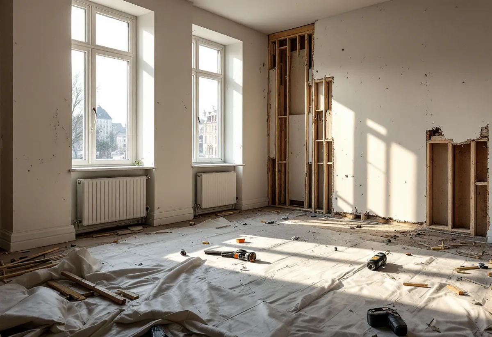
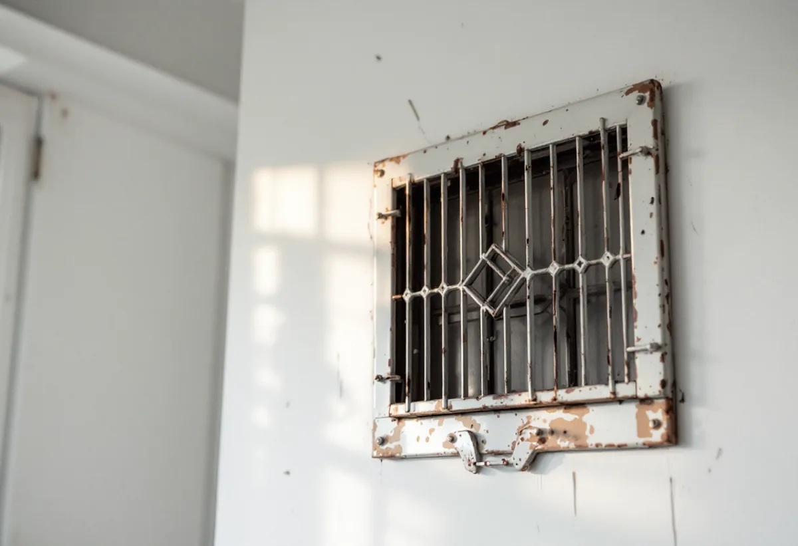

Platsbesök
Gratis besök i lägenheten och genomgång av ritningar.
En totalrenovering på Östermalm gäller i regel en lägenhet i ett äldre stenhus. Innan något rivs behövs styrelsens tillstånd, och ibland en anmälan till staden. Geal Entreprenad AB totalrenoverar lägenheter och tar fram underlaget till föreningen.
Stadens områdesfakta för 2025 räknar i Hedvig Eleonora drygt 5 100 bostadsrätter i flerbostadshus, omkring 2 100 lägenheter hos privata hyresvärdar och elva småhus. Stenstaden här uppfördes enligt stadens redovisning av riksintressena till största delen under 1800-talets senare del.
Hyr du lägenheten får du enligt staden normalt inte göra ändringar i bärande delar, ventilation eller vatten och avlopp. En totalrenovering är därför i praktiken något som bostadsrättshavare och fastighetsägare gör, och för bostadsrättshavaren börjar den hos styrelsen.

Bostadsrättslagen säger att du inte utan styrelsens tillstånd får göra ingrepp i en bärande konstruktion, installera eller ändra ledningar för avlopp, värme, gas eller vatten, installera eller ändra ventilation, installera eller ändra eldstad eller rökkanal eller på annat sätt påverka brandskyddet, eller göra någon annan väsentlig förändring av lägenheten.
För en lägenhet med särskilda historiska, kulturhistoriska, miljömässiga eller konstnärliga värden krävs enligt lagen tillstånd för varje åtgärd som påverkar ett sådant värde. Styrelsen får bara vägra om åtgärden är till påtaglig skada eller olägenhet för föreningen, och den kan förena tillståndet med villkor.
Stockholms stad skriver att du inte behöver göra en anmälan när du ändrar planlösningen inom en lägenhet och inga tekniska egenskapskrav påverkas, till exempel om du flyttar köket eller badrummet eller ändrar hur rummen används. Delar du en lägenhet i två krävs däremot bygglov, eftersom en ny bostad skapas.
Påverkas bärande konstruktion eller brandskydd, eller ändras ventilation eller vatten och avlopp väsentligt, krävs en anmälan och startbesked. Staden påpekar att ritningar kan vara ofullständiga och att det inte är säkert att husen byggts efter dem, så vid osäkerhet om en vägg är bärande tar vi in en konstruktör.
Staden beskriver att det i äldre hus ofta finns självdragsventilation, där använd luft sugs ut genom kanaler i kök och badrum och tilluft kommer in via ventiler, vädringsfönster eller otätheter. På sommaren kan drageffekten utebli.
Vid en totalrenovering går vi därför igenom kanalerna innan kök och badrum ritas, och väsentliga ändringar av ventilationen tar vi upp med styrelsen och staden. Mer om tjänsten finns under villarenovering och totalrenovering.
Elsäkerhetsverket skriver att de flesta elinstallationsarbeten ska utföras av ett registrerat elinstallationsföretag, och att det vid förändringar i den fasta installationen, till exempel ett uttag i köket eller ledningar i väggar, ska anlitas ett sådant. Vid en totalrenovering byts ofta hela elen i lägenheten.
Är styrelsen missnöjd med din ansökan, eller du med styrelsens beslut, kan du enligt bostadsrättslagen begära att hyresnämnden prövar frågan. Vi tar därför fram ett underlag som visar vad som ändras och hur, så att beslutet kan fattas på rätt grund.

Gratis besök i lägenheten och genomgång av ritningar.
Underlag till styrelsen för tillståndet.
Startbesked om stomme, brand eller ventilation berörs.
Skydd av trapphus och bortforsling.
El, vatten, avlopp och ventilation.
Golv, väggar, kök och badrum.
I en bostadsrätt ger Skatteverket rotavdrag för arbete innanför lägenhetens tak, väggar och golv som du ansvarar för enligt stadgarna, till exempel att riva innerväggar och bygga om planlösningen. Stambyten och arbete på gemensamma delar ger inget avdrag för bostadsrättshavaren.
Avdraget är högst 30 procent av arbetskostnaden och högst 50 000 kronor per person och år. Material och resor ger inget avdrag. Geal drar avdraget direkt på fakturan.
Lägenhetens storlek, hur mycket av planlösningen som ändras, om bärande väggar, ventilation och ledningar berörs, föreningens villkor för arbetet och vilken standard du väljer. Efter ett gratis platsbesök får du ett skriftligt kostnadsförslag.
Renovera hela huset eller lägenheten.
Villarenovering →Takbyte, takbesiktning och plåtarbeten.
Takläggare på Östermalm →Stenstad, Lärkstaden, Diplomatstaden och Gärdet.
Takrenovering på Östermalm →Kulturvärden, förvanskningsförbud och klassning.
Badrumsrenovering på Östermalm →Slå ihop två lägenheter.
Byggföretag på Östermalm →Husets ursprungliga kulör.
Fasadmålning på Östermalm →Gatufasad, gårdsfasad och lovfrågan.
Fasadrenovering på Östermalm →Stenstaden, Lärkstaden och villorna.
Fönsterbyte på Östermalm →Fönster och glas i Gärdets 1930-talshus.
Fönsterrenovering på Östermalm →Mönsterparkett, lack och olja.
Golvläggare på Östermalm →Slipa om eller underhålla lackade golv.
Golvslipning på Östermalm →Stora lägenheter och kulturvärden.
Köksrenovering på Östermalm →Limfärg i taken, dekor och lov.
Målare på Östermalm →Taklandskapet och balkongerna.
Plåtslagare på Östermalm →Lagning av dörrar, paneler och fasta snickerier.
Snickare på Östermalm →Nytt tak med taksäkerhet och snörasskydd.
Takbyte på Östermalm →Klassade våningar och bostadsrätt.
Tapetsering på Östermalm →